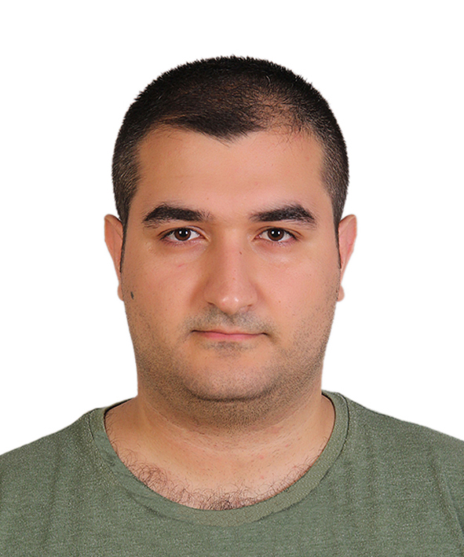

Kariyer Hedefi
Frontend ile başlayan web'e olan ilgim backend ile devam etti. React native ile de
mobile ilgi duymaya başladım. Mobil de dahil olmak üzere full stack web development,
çalışmaktan çok fazla zevk aldığım bir alan. Bu stack'in tümünü ya da her hangi bir
parçasını içeren işlerde çalışmak istiyorum.
Çalışmak istediğim işlerde en büyük motivasyonum kendimi geliştirebilmek. Beni yeni
şeyler öğrenmeye zorlayacak, problem çözmeye zorlayacak işlerde çalışmak istiyorum. Son
çıkan framework'leri ve library'leri kullanmak, yeni yöntemleri, yeni teknikleri
uygulamak istiyorum.
Kendi projelerimde bu yaklaşım ile her zaman yeni şeyleri veya henüz bilmediğim şeyleri
öğrenmeye ve uygulamaya çalıştım. Çalışmayı en çok tercih ettiğim ve çok verimli
bulduğum stack'i açmam gerekirse: React.js ile browser frontend, React-Native ile mobil
native frontend, Node.js ile rest api, MongoDB ile NoSQL veritabanı. Bu stack üzerine
inşa edilmiş yapıları kullanmayı da tercih ediyorum (Next.js, Nest.js, Expo).
Frontend'de react benim için olmazsa olmaz. Backend'de Node.js haricindekilere de ilgi
duyuyorum (.Net, Golang,Python). MongoDB'yi document yapısı bazı işleri kolaylaştırdığı
için tercih ediyorum. SQL veritabanlarına da ilgi duyuyorum.
Eğitim Bilgileri
Üniversite
Kocaeli Üniversitesi 2013-2022
Bilgisayar Mühendisliği Lisans
Lise
Cahit Elginkan Anadolu Lisesi - Kocaeli
Yabancı Dil Bilgisi
İngilizce
Araştırma yapmak ve asenkron iletişim için yeterli düzeyde.
İş Deneyimi
(Staj) Lean Teknoloji - Frontend Developer - Başlangıç: 07/2019 - Bitiş: 08/2019
Bu işte react ile frontend geliştiriciliği yaptım. Yeni yapılmaya başlanan bir projede
görev aldım. Bir kaç sayfayı ve bir kaç component'i inşa ettim. Bir çok bug çözdüm.
Geri bildirimlerde bulundum. Birden fazla kişiyle aynı projede çalışmayı deneyimledim.
Git commit'lerinde conflict'leri ilk burada deneyimledim. AWS ile deployment'ı
deneyimledim.
Kişisel Projeler
Sesli Kitap Uygulaması
Kitap dinleme hizmeti veren bir mobil uygulama. Projedeki tek yazılım geliştiriciyim.
Projede amaç benzer uygulamalardaki tüm özelliklere ek olarak kendi isterlerimize
uygun özellikleri içeren bir uygulama yapmaktı. Audio stream ve download bu
özelliklerin en başında geliyor. Stream için HLS protokolü kullanılıyor. Mobil
uygulama React Native ile geliştirildi. Backend'de Node.js ile rest api oluşturuldu.
Nginx ile reverse-proxy sunucu kuruldu. Dosya transferleri hızlı olduğu için nginx ile
sağlanıyor. Admin panel için React.js ve material-ui kullanıldı. Authentication için
çift token'lı (access ve refresh) bir sistem geliştirildi. JWT ile oluşturulmuş access
token ile api istekleri yapılıyor. Access token'ın kısa bir expire time'ı bulunmakta.
Giriş yapıldığında verilen ve backend'de veritabanında tutulan refresh token
kullanılarak yeni bir access token alınabiliyor. Refresh token sistemi sayesinde tüm
oturumlar yönetilebiliyor (Google ve diğerlerinde kullanılan sistem).
Todo Lists Uygulaması
Geleneksel todo app'lerin genişletilmiş bir hali. Sadece bir todo list değil, birden
çok todo list var. Her bir todo list'in kendi todo'ları var. Yani katmanlı bir CRUD
bulunmakta. Uygulama hem kullanıcı girişi yapılarak kullanılabiliyor hem de giriş
yapılmadan misafir kullanıcı olarak kullanılabiliyor. İlk olarak, kullanıcıların giriş
yapmak istemeyip hızlıca uygulamayı kullanmak isteyebilecekleri düşünülerek verilerin
client'ın local veritabanında tutulduğu bir akış geliştirildi. İkincil olarak,
kullanıcıların giriş yaparak verilerin sunucudaki veritabanında tutulduğu bir akış
geliştirildi. Browser frontend React.js ile geliştirildi. Authentication için sesli
kitap uygulamasında geliştirilen sistem bu projede de kullanıldı. Mobil native
frontend React-Native ile geliştirildi. Backend ise Node.js ile geliştirildi. Backend
ücretsiz bir Heroku Dyno'sunda çalışıyor. Frontend ise Vercel üzerinde çalışıyor. Bu
projelerin public repoları github profilimde görülebilir. Web sayfasına
https://todo-lists-web.vercel.app
adresinden ulaşılabilir. Mobil apk dosyasına
https://github.com/ulasozturk/todo-lists-mobile/releases
adresinden ulaşabilirsiniz.
Okul Projeleri
- Bir rest api ve bir android projesi ile CRUD işlemlerini gerçekleştirme.
- Java ile yapılmış bir mvc uygulaması ile sql veritabanı üzerinde CRUD işlemlerini gerçekleştirme.
- Kare puzzle oyunu.
- YUV (raw image data) decoder ve player uygulaması.
- Kare olmayan matrisin tersini bulma.
- A* (heuristic) algoritmasını kullanarak en kısa yol problemini çözme.
- Gezgin satıcı problemini türkiye haritası üzerinde çözmek.
- Gauss-Jordan elimination yöntemi ile bir kavşaktaki bilinmeyen trafik yoğunluğunu bulma.
- Java ile diamond probleminin (multiple inheritance) çözülmesi.
- Java ile geliştirilen, tüm yazılım tasarım kalıplarının her biri için uydurduğum bir problemi çözen, projeler yapmak.
- Bir otomatın kontrol panelini gömülü sistem ile yapma.
- Yii 2 php framework'ü ile bir mvc projesi